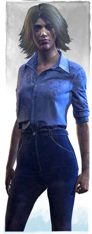
Laurie Strode es una superviviente decidida, preparada para enfrentarse a cualquier desafío.
Sus Habilidades personales Solo Quedo Yo, Objeto de Obsesión y Golpe Decisivo le conceden poderosas capacidades de supervivencia a costa de quedarse expuesta.
Sus habilidades están ligadas a la Obsesión del Asesino, basándose en sobrevivir sin importar cómo.
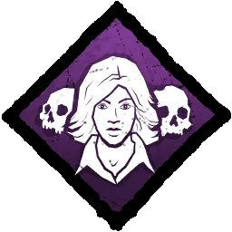
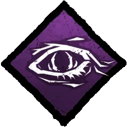
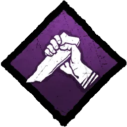
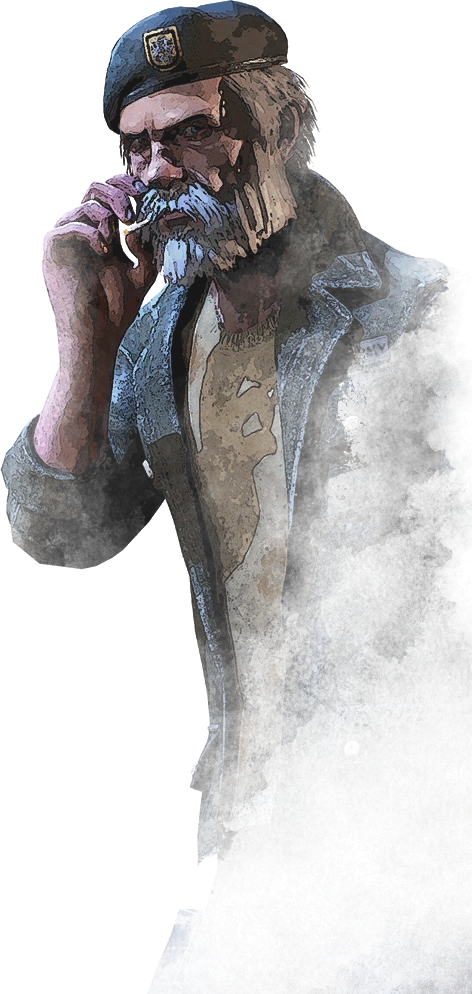
William "Bill" Overbeck es un viejo soldado, acostumbrado a enfrentarse a situaciones extremas.
Sus Habilidades personales, Abandonado a Tu Suerte, Tiempo Prestado e Inquebrantable, lo hacen más poderoso en los momentos difíciles.
Es duro como un roble y sabe cómo sobrevivir a casi cualquier cosa. Hará lo que sea necesario para ayudar a los demás a vivir para ver otro día y no tiene miedo de jugar en equipo.
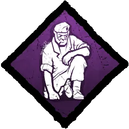
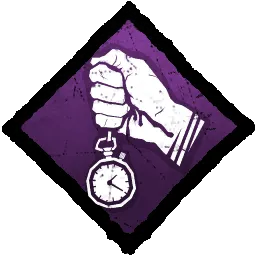
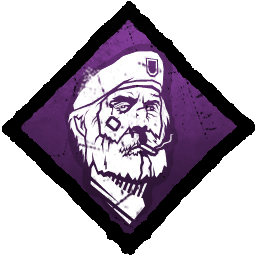
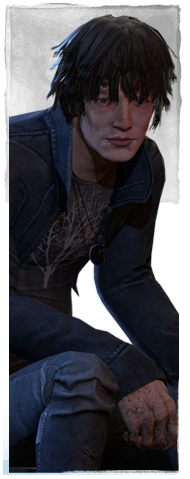
Quentin Smith es un caminante de sueños decidido que aumenta la capacidad de supervivencia y de recuperación de su equipo.
Sus habilidades personales, ¡Despierta!, Farmacia y Vigilia, ayudan a los Supervivientes a localizar las puertas de salida y a recuperarse más fácilmente.
Sus habilidades se centran en la supervivencia y en ayudar a otros, proporcionando una especie de apoyo en esta pesadilla.
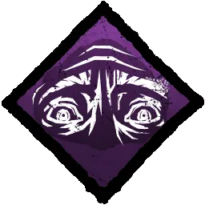
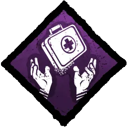
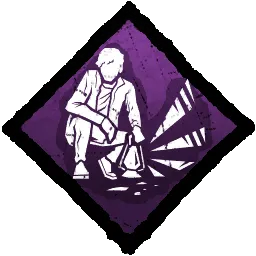
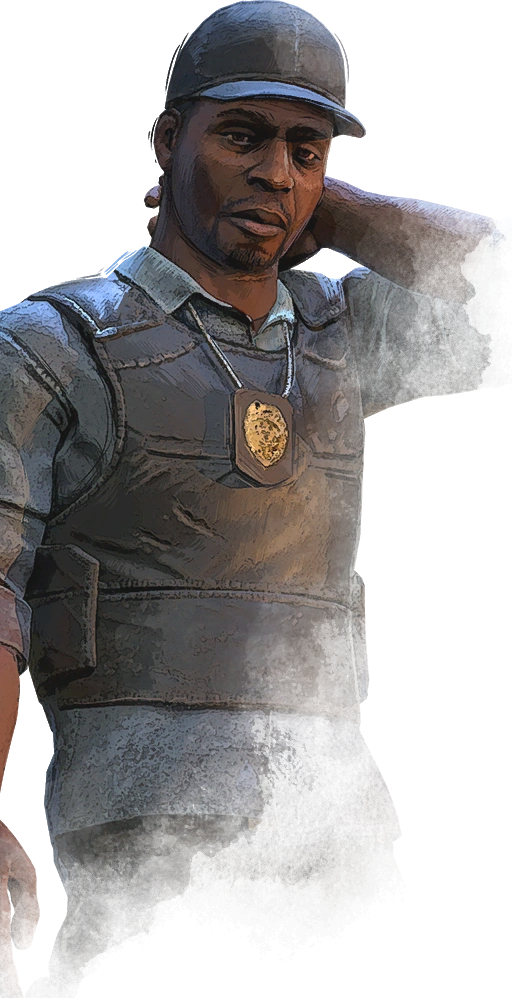
David Tapp es un detective obsesionado, capaz de localizar y completar objetivos con mayor rapidez.
Sus habilidades personales Tenacidad, Corazonada y Bajo Vigilancia le permiten concentrarse en sus objetivos y recuperarse rápidamente.
Sus ventajas giran en torno a la determinación y a no darse por vencido. Estás decidido a alcanzar tu objetivo y sobrevivir sin importar qué.
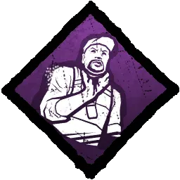
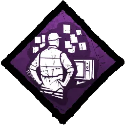
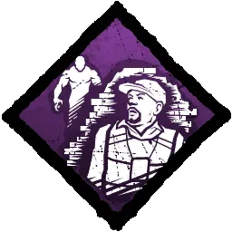
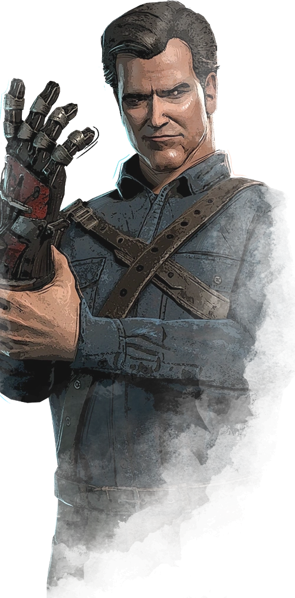
Ashley "Ash" Joanna Williams es un "lobo solitario", chulo y testarudo como ninguno; un hombre hecho para sobrevivir.
Sus Habilidades Personales, Hasta Otra, Sujétate y El Temple del Hombre le otorgan resistencia adicional contra el dolor y la adversidad, así como la capacidad de ayudar a sus amigos a salir de situaciones complicadas.
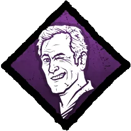
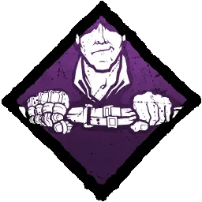
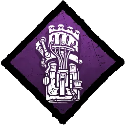
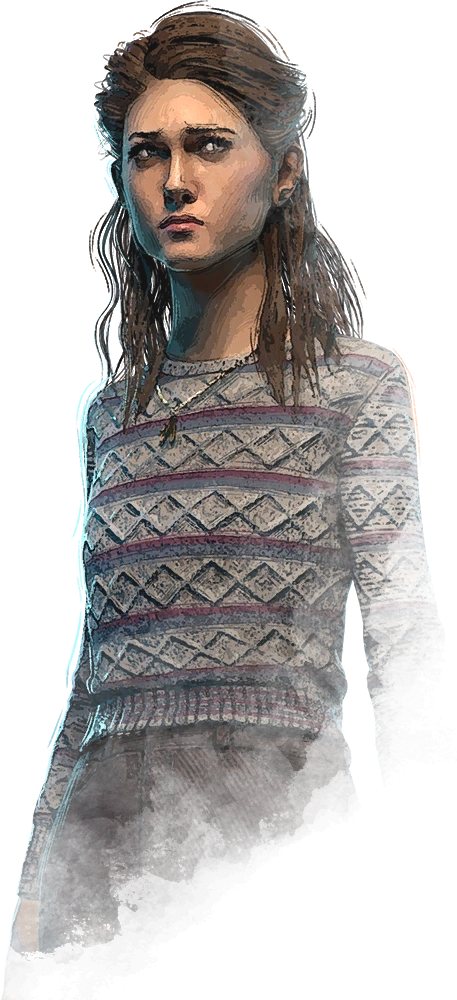
Nancy Wheeler es una aspirante a periodista, capaz de observar con detalle y obtener información que a los demás se les suele escapar.
Sus habilidades personales, Mejor Juntos, Fijación y Fuerza Interior, le proporcionan los datos y el coraje que necesita para hacer frente a desafíos inesperados.
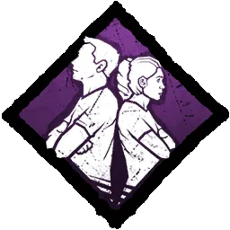
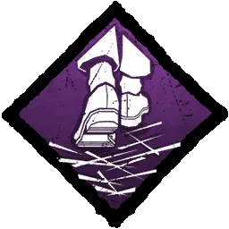
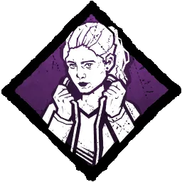
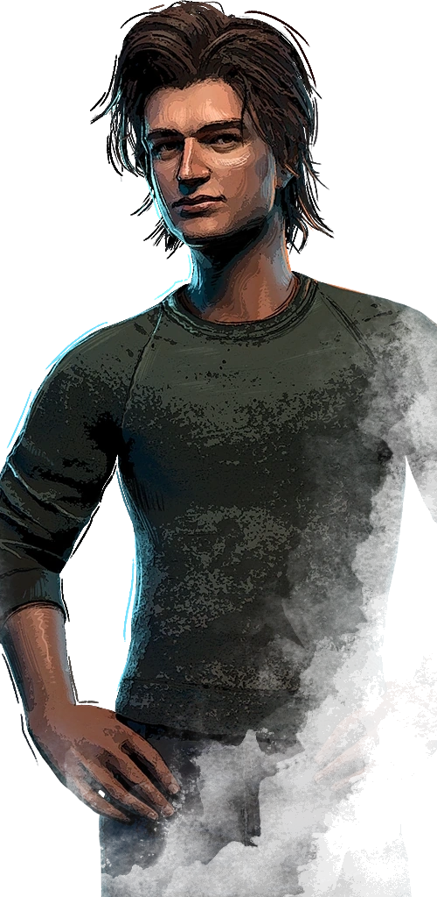
Steve Harrington es un abusón reformado que ahora ayuda al resto de Supervivientes, sin sacrificar por ello su humor marca de la casa.
Sus habilidades personales Canguro, Camaradería y Segundo Aliento servirán para distraer a los asesinos, sobreponerse al dolor y regresar a la batalla.
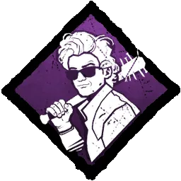
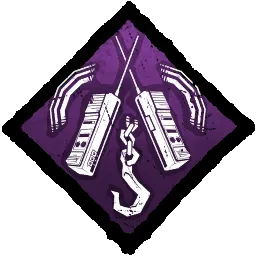
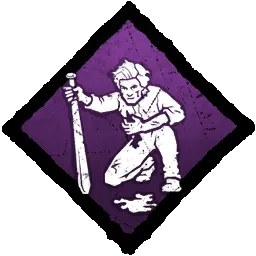
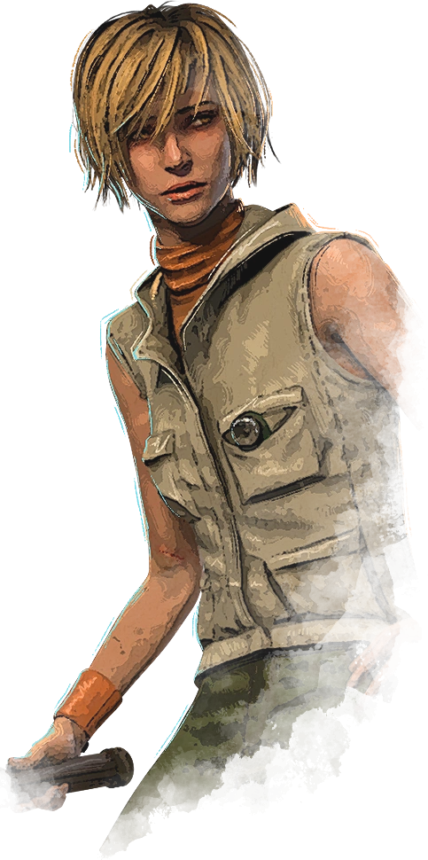
Cheryl Mason es una joven que se vale de su amplia experiencia en mundos del terror para infundir confianza a su equipo y a sí misma.
Sus habilidades personales Salvaguarda de Alma, Pacto de Sangre y Supresión de Alianza le permiten sobrevivir a grandes obstáculos, mantenerse en contacto con sus compañeros y planificar objetivos.
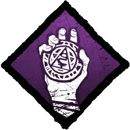
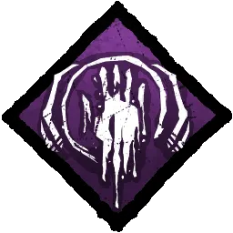
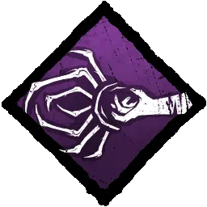
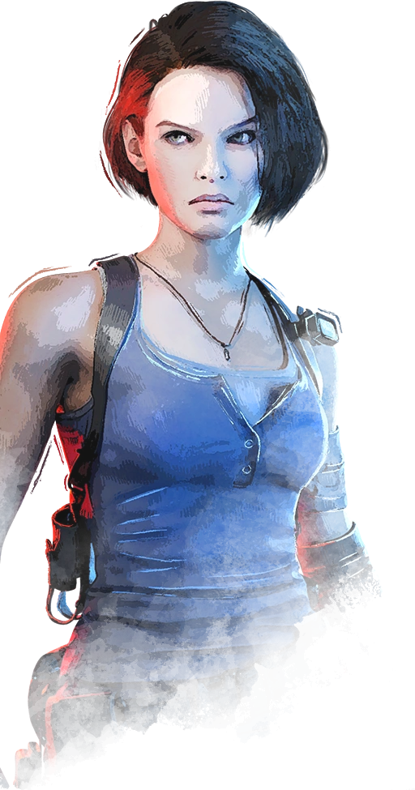
Jill Valentine es una de las fundadoras de S.T.A.R.S. que ha sobrevivido a innumerables armas bioorgánicas.
Sus habilidades personales, Contrafuerza, Resurgimiento y Mina Explosiva, le permiten defenderse de forma indirecta mientras ofrece apoyo a su equipo.
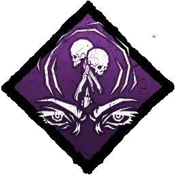
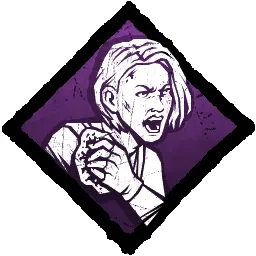
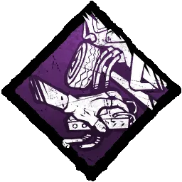
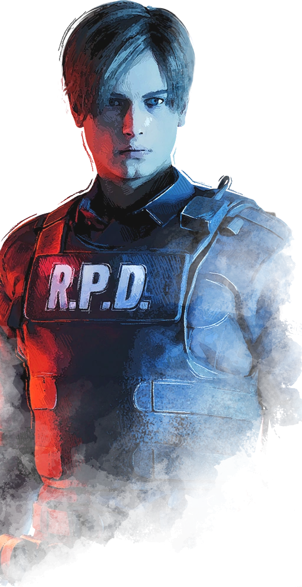
Leon Scott Kennedy es un agente de policía novato que se excedió en sus obligaciones durante el brote de Raccoon City.
Sus habilidades personales, De Tripas Corazón, Granada Aturdidora y Espíritu de Novato, le permiten ignorar el dolor, distraer al asesino y rastrear objetivos perdidos.
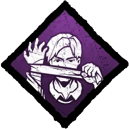
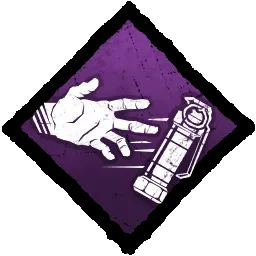
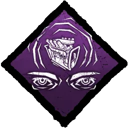
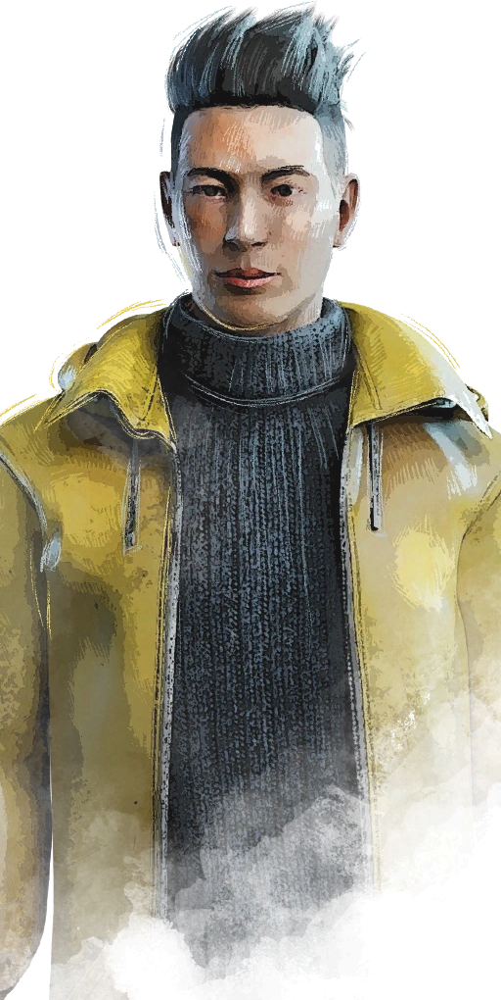
Yoichi Asakawa es un experto en Biología Marina con poderes psíquicos. Su conocimiento y habilidades le permiten protegerse y ayudar a otros.
Sus habilidades personales, Consejo Paterno, Conexión Empática y Bendición: Teoría Oscura, le permiten ocultarse de los asesinos, ayudar a los supervivientes que estén heridos y ayudarles a moverse más rápido.
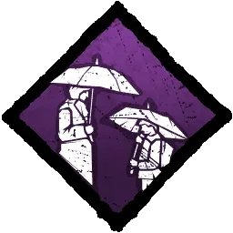
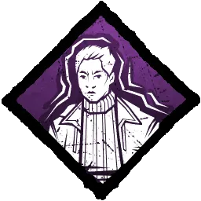
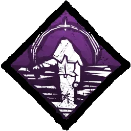
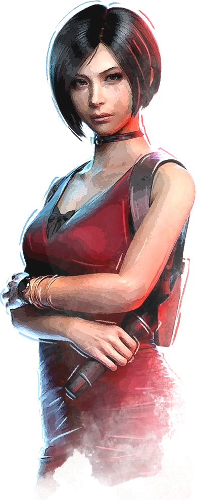
Ada Wong es una misteriosa agente secreta; su talento como espía la convierte en una rival muy peligrosa.
Sus habilidades personales, Sistema de Espionaje, Curación Reactiva y Perfil Bajo, le permiten espiar al asesino, recuperar la salud cuando sus aliados estén heridos y no dejar ningún rastro cuando es el último superviviente.
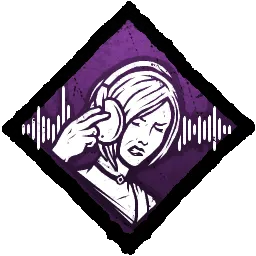
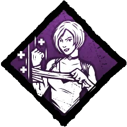
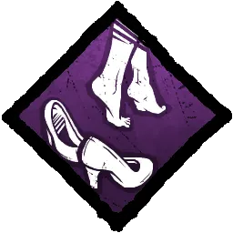
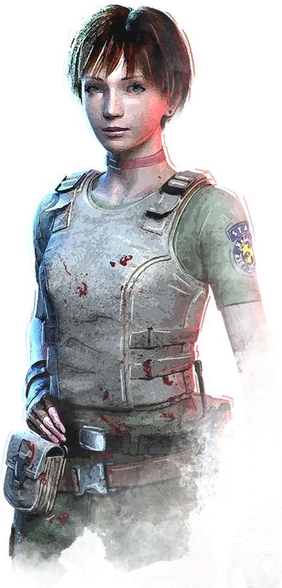
Rebecca Chambers es una médica brillante y miembro del equipo con el don de calmar con su mera presencia.
Sus habilidades personales, Mejor que Nuevo, Reafirmación e Hiperconcentración le permitirán darles un aumento de velocidad a sus compañeros, aliviar temporalmente a los aliados que estén sufriendo y realizar pruebas de habilidad completas más rápido.
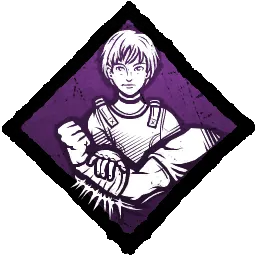
Nicolas Cage es una superestrella, atrapado en el papel de su vida.
Sus ventajas personales, Dramaturgia, Compa de Escena y Giro Argumental, lo ayudarán a huir rápido, ver el aura del asesino y fingir que está agonizando.
Ellen Ripley, Suboficial de la Nostromo, es capaz y pragmática.
Sus ventajas personales, Trampa Química, De Pies Ligeros y Estrella de la Suerte, le permiten esconder sus charcos de sangre y gruñidos de dolor, reducir la velocidad de los asesinos con tarimas entrampadas, y correr silenciosamente.
Alan Wake, un exitoso escritor, sabe lo que significa hacer retroceder la oscuridad.
Sus ventajas, Campeón de la Luz, Bendición: Iluminación y Fecha Límite, hacen más poderosas a las linternas, revelan cofres y generadores, y crean pruebas de habilidad más frecuentes.
Aestri, su compañero bardo Baermar y su compañía jamás huyen de una aventura.
Sus ventajas personales, Ilusión Reflejada, Inspiración Bárdica y Mirada Fija les permiten crear ilusiones, ayudar a otros a reparar generadores con mayor rapidez y ver generadores, tótems y cofres cercanos.
Lara Croft ha perfeccionado sus instintos con cada una de sus peligrosas expediciones.
Sus ventajas personales, Elegancia, Especialista y Endurecida, le permiten revelar al asesino en vez de gritar, reparar generadores con eficacia y saltar aún más rápido.
Trevor Belmont, cazavampiros, sabe que está destinado a vencer al mal.
Sus ventajas personales, Ojos de Belmont, Exultación y Momento de Gloria, le permiten ver el aura del asesino, aumentan la rareza de un objeto y curan un estado de salud.